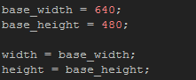
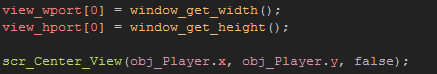

Tutorial
Page 7 of 15
HTML5 Scaling With Views
We have seen that it is a simple procedure to scale the game canvas to the browser width and height, so that no matter how the user resizes the browser, the game room will still be visible. However, what about
when using views?
Open up the room rm_HTML5_2 and you will see that it is a large room that takes up the whole browser when you run the game. But we want to make a view into the game that is 640px by 480px
and then have that scaled to fit the browser.
To start with go to the views tab in the room editor and enable views and set view[0] to be visible. Now set the width and height of the view port and the width and height of the view itself to
be 480 by 640 pixels. You can now close the room and open up the object labelled obj_HTML5_Scaling_Views.
This object is a child of the object obj_HTML5_Scaling (if you look at the parent setting for the object you can see that it points to this object) and it has no events! This is because it
will inherit the events of the parent object. Parenting in this way is a very powerful tool, and can help maintain a tidy code-base, as you can write one set of codes for a parent object and be sure that
all children of that object will "inherit" this code.
To make our view work correctly with a scaling canvas, we need to change a couple of things however, so add a Create Event to the object and place the following code:

As with all previous objects we need to set a base width and height, but this time we are setting it to the size of the view rather than the room. Now add an End Step Event to the object as that is where
we need to add our next code block.
We are using the End Step Event because the canvas scaling that we created for the parent object does a fine job of scaling the game window to fit the browser and needs no extra code to work, so
we can use the inherited Step Event to take care of that. However, if you do not set the view port to fit the new canvas size, the view will be "squashed" as the browser changes size due
to GameMaker:Studio attempting to fit the fixed view port of 640x480 to the current browser size. Fortunately though, to fix this requires only the following code:

As you can see, we simply set the view port to be the same as the canvas and everything will now scale correctly (and we add the view center script that we created here too, otherwise you game view will not
move with the player!).
Test the game now and change the browser size while moving around to see how this works. Also, note that the script we wrote for zooming in windows, as well as the ability to limit the view to the game room,
can both be used here. See if you can't set up a zoom effect by copying over the events from the object obj_Windows_Fullscreen_2.
NOTE: This script will work perfectly fine on the Windows 8 (JS) target platform, however, instead of using the Step Event to control scaling, you should simply call it from the special
Resize sub-event that you can find in the Draw event of the object. This will be triggered whenever the game window is "snapped" in the Windows 8 interface.
Click on the Next button to go to the next page of the tutorial.